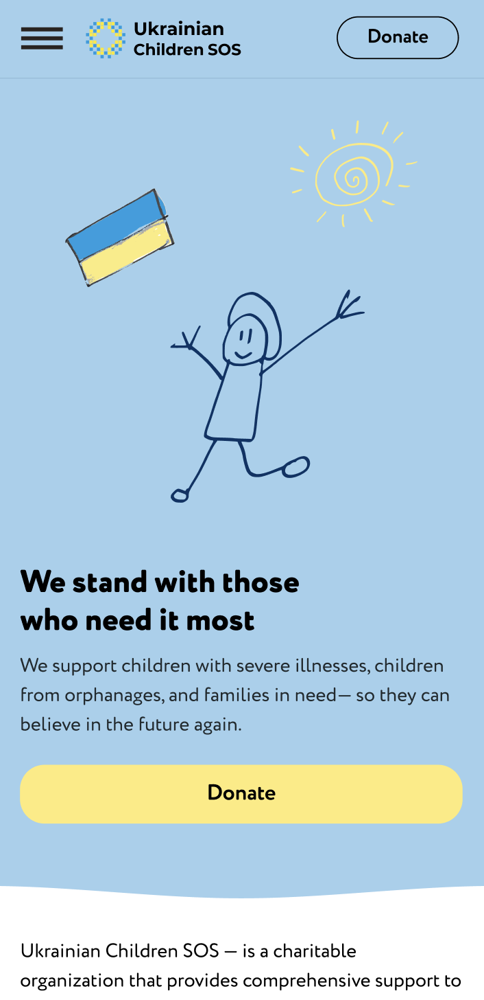
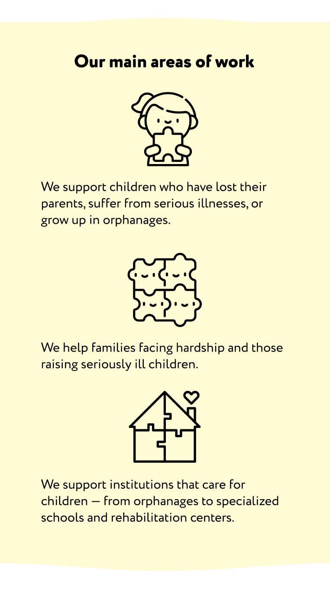
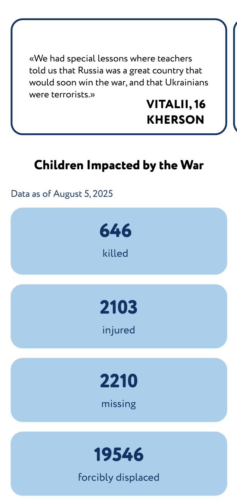
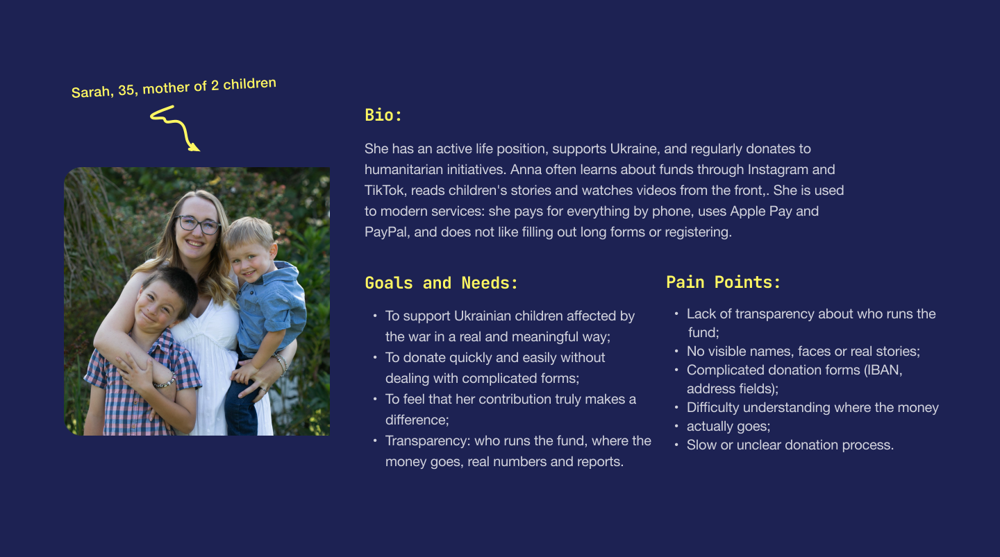
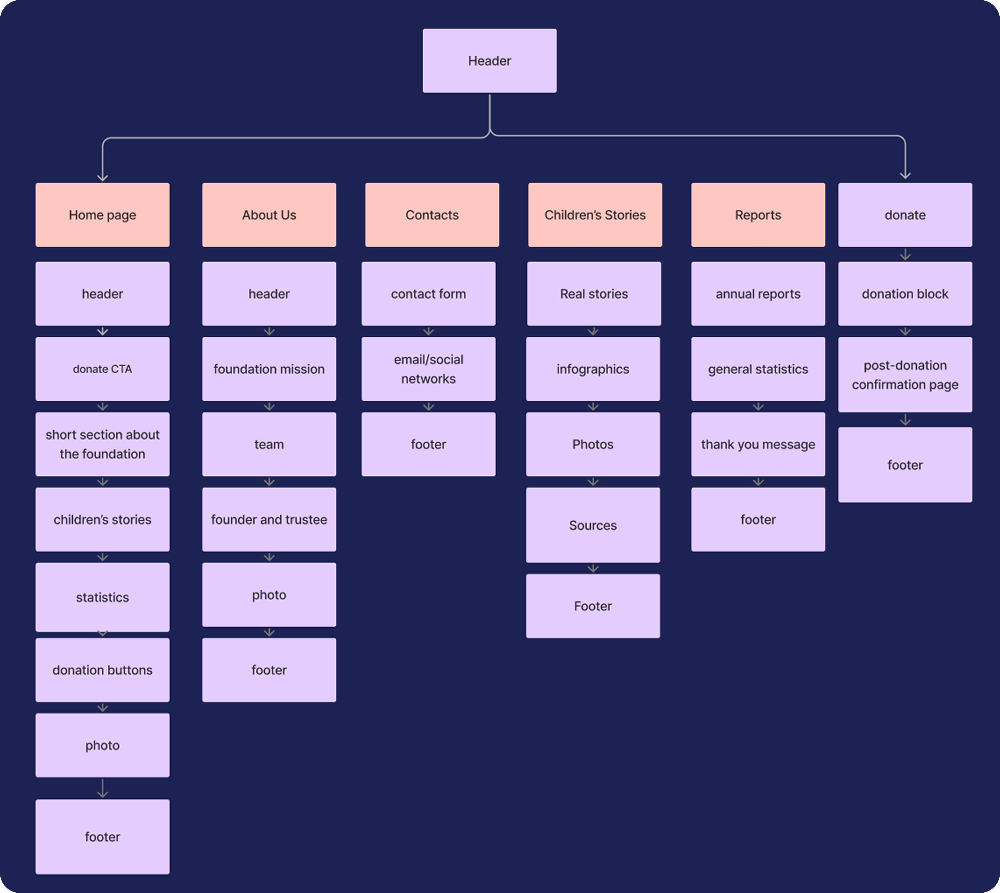
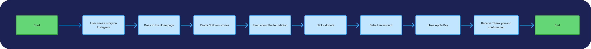
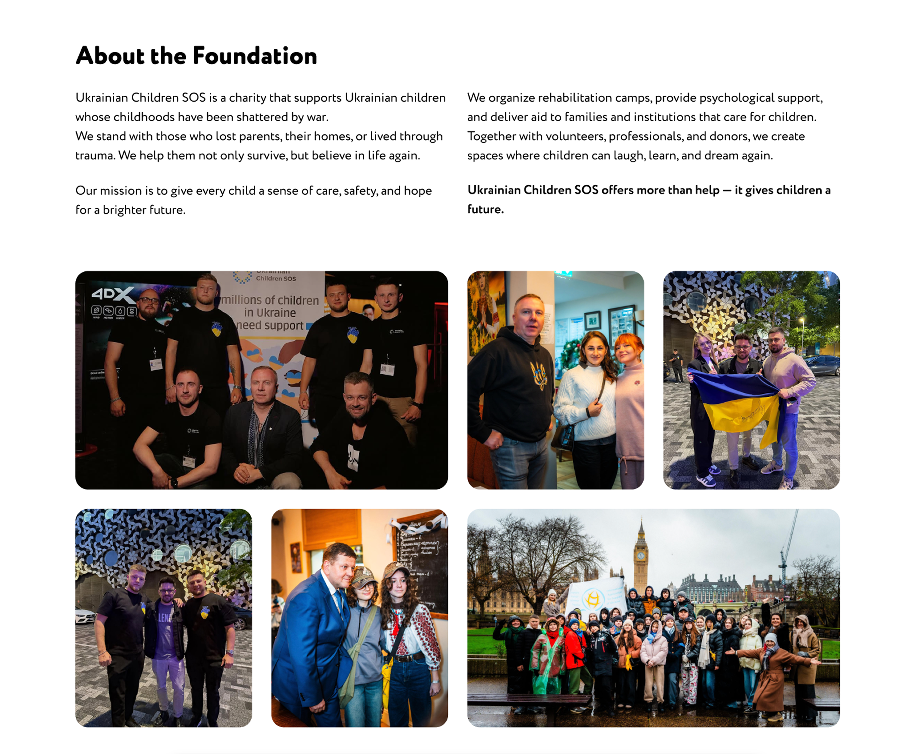
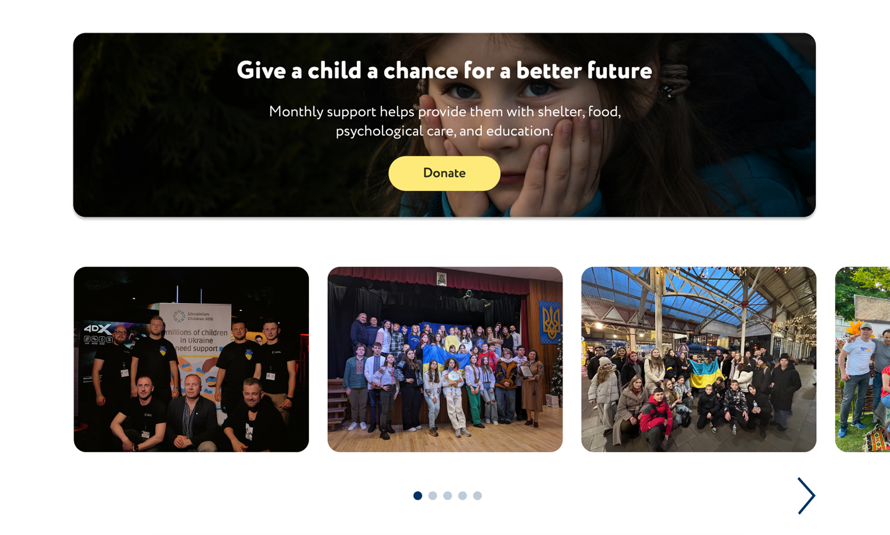
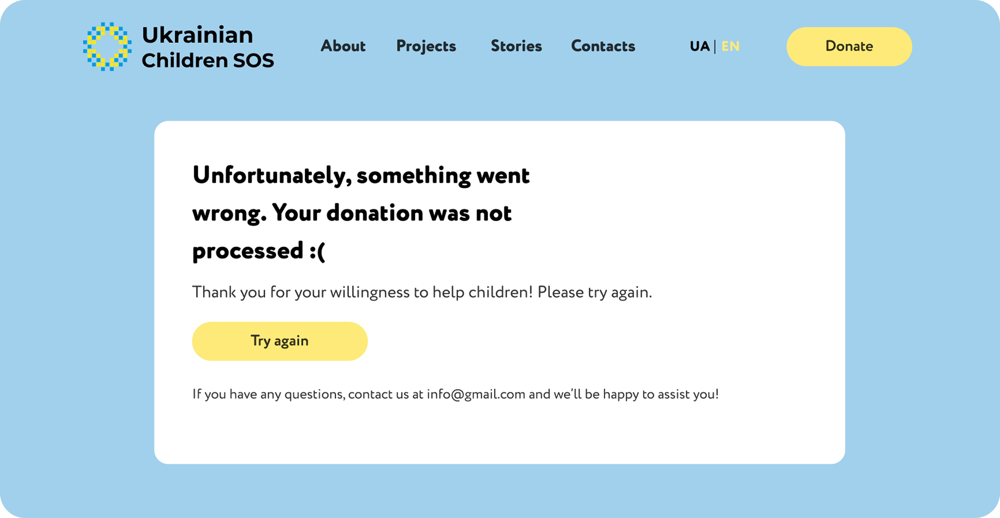
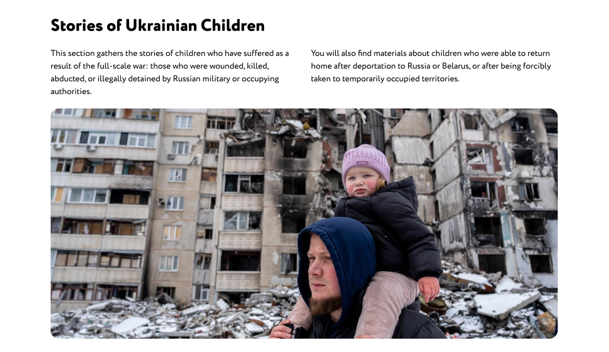

Ukrainian children SOS
About
project
Ukrainian Children SOS is a London-based charity supporting Ukrainian children affected by the war.
The founder is a Ukrainian living in the UK, who reached out with a request to redesign their outdated and non-functional website.
Client: Ukrainian Children SOS Foundation
Year: 2025
Role: Product Designer
Location: London

Responsibilities
I led the redesign of the website to improve trust and simplify the donation experience. My focus was on understanding why users avoided donating online and designing a clearer, faster, and more reliable journey that encourages action.
User & Project Challenges
Users hesitated to donate through the website because the experience did not feel clear, reliable, or transparent enough. They wanted to understand who was behind the organisation, where their money would go, and whether the charity was active and trustworthy.
The main project challenge was to rebuild trust while keeping the website warm, child-friendly, and emotionally supportive. I had to balance sensitive storytelling with a professional and credible interface, while also making the donation journey feel simple, safe, and easy to complete.
Goals
The main goal was to support the organisation’s business objective: increase online donations by making the website feel more trustworthy, transparent, and easy to use.
- Build trust through clearer information about the charity, team, and mission.
- Simplify the donation journey and reduce hesitation before donating.
- Make impact stories and transparency more visible across the website.
- Create a warm but professional visual identity that feels safe and credible.



UX Research
& Insights
I conducted 5 user interviews to understand what influences people’s decision to trust and donate online.
Key insights showed that users:
- value transparency and want to see how funds are spent;
- feel more confident when secure payment options like PayPal and Apple Pay are available;
- appreciate seeing real people, the team, founders, and stories of children;
- value clear reports and team photos.
User Persona

From Persona
to Structure
After defining the persona, I used the main pain points as a foundation for restructuring the website. The research showed that users were emotionally willing to help, but they hesitated because they needed more transparency, proof, and reassurance before donating.
The reason users were not donating through the website was not a lack of motivation. It was a lack of trust. Because of this, the information architecture was designed to make trust-building content easier to find before users reached the donation step.
Information
Architecture
The information architecture was redesigned around the user’s trust barriers. Instead of placing donation as an isolated action, I structured the website so users could first understand the organisation, see real people and stories, check transparency signals, and then move confidently towards donating.

About Us was made clearer to show the mission, team, founder, and trustees.
Children’s Stories were moved into the main navigation and given a dedicated page.
Reports and impact content were added to support transparency and credibility.
Donate CTAs were kept visible across key pages so users could act when ready.
Contacts and feedback states gave users a clear way to ask questions or recover if something went wrong.
User Flow

Once the website structure was reorganised around trust-building content, I focused on the donation journey as the key user flow. This was the most important action for both users and the organisation.
The flow shows how users first discover the foundation, then build trust through About Us, real stories, reports, and visible impact content before moving towards donation. The goal was to make the journey feel clear, reassuring, and easy to complete, instead of asking users to donate before they felt confident.
Final Design (UI)
The final UI translated the research findings, persona pain points, and information architecture decisions into visual screens. Each screen was designed to answer a specific user concern: Who runs the charity? Where does the money go? Can I trust this organisation? Can I donate quickly and safely?

Building trust through real people and visible proof
Research showed that users hesitated to donate when they could not clearly see who was behind the organisation. To reduce this uncertainty, I designed the “About the Foundation” page to show the charity’s mission, team photos, real events, and people involved in the work.
This makes the organisation feel more transparent and human, helping users understand that the charity is active, real, and accountable before they decide to donate.

Making donation easy to access from emotional content
I placed the Donate button across important sections so users can take action as soon as they feel ready. Real charity photos were used to build emotional connection and show visible proof of the organisation’s work.
This connects the user’s motivation to help with a clear and immediate donation path.

Supporting users when something goes wrong
The research showed that users need reassurance during donation, especially when payment does not work. I designed a clear error state with a simple message, a visible “Try again” button, and contact details.
This prevents users from feeling lost and gives them a clear next step.

Making the cause feel human and immediate
Users wanted to see real people and real stories before deciding to donate. I added a dedicated stories section to show the experiences of Ukrainian children affected by the war and make the charity’s mission more tangible.
This supports emotional connection and helps users understand the real impact behind their donation.
What I Learned
One of the biggest challenges I faced was learning how to balance emotion with trust. The website needed to feel warm and human because it supports children, but it also had to look professional, credible, and safe enough for users to donate online.
Through this project, I learned that strong UI is not only about visual design, but about solving user concerns. Research helped me understand why users hesitated to donate, and I used those insights to make clearer design decisions, such as improving transparency, showing real people and stories, and making the Donate button easier to access.
In future projects, I will apply this by connecting every design decision more clearly to user research and business goals. I also want to keep improving how I explain my design thinking, because this project showed me how important it is to communicate not only what I designed, but why I designed it.